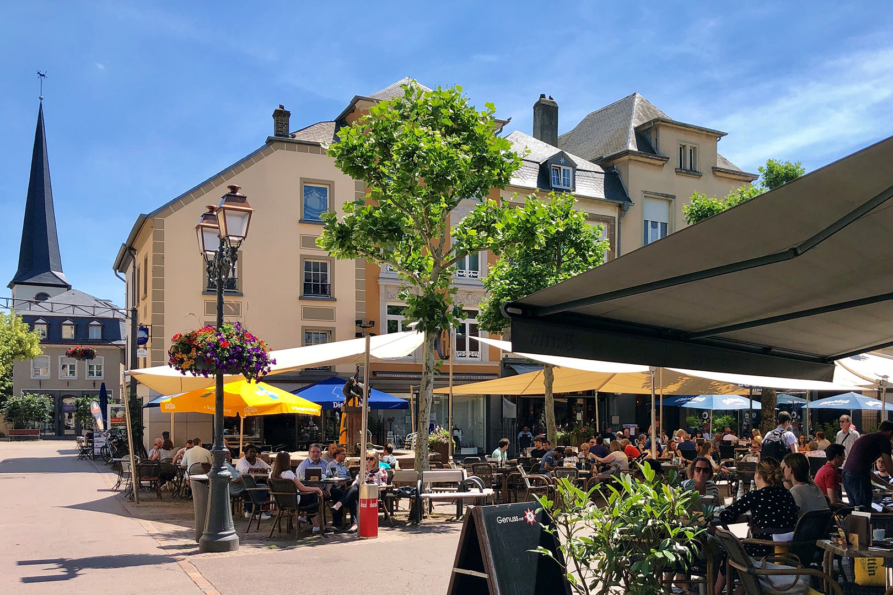

Diekirch (Luxembourgish: Dikrech [ˈdikʀəɕ] (audio speaker iconlisten) or (locally) Dikrich [ˈdikʀiɕ]; from Diet-Kirch, i.e. "people's church") is a commune with town status in north-eastern Luxembourg, capital city of the canton Diekirch and, until its abolition in 2015, the district of Diekirch. The town is situated on the banks of the Sauer river.
